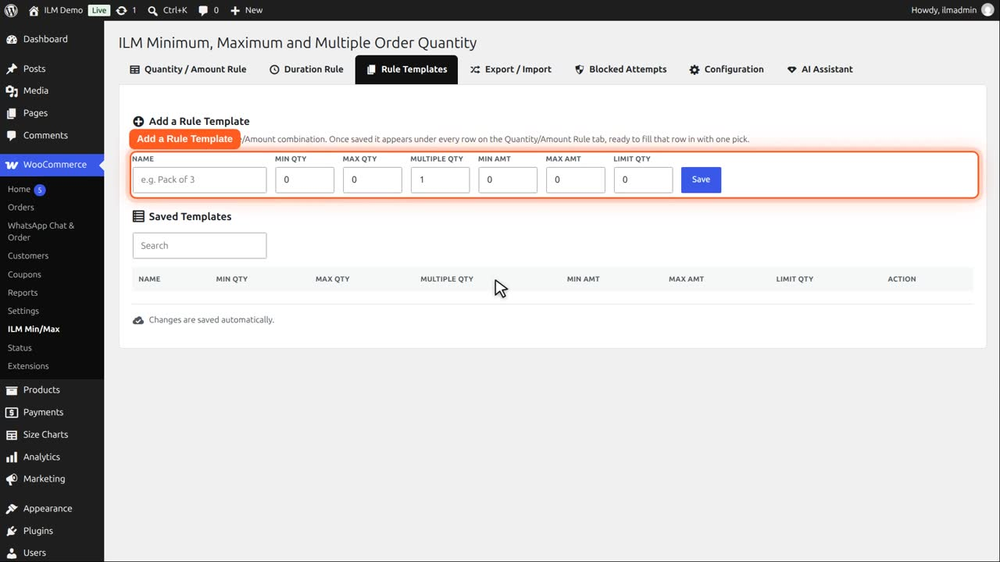
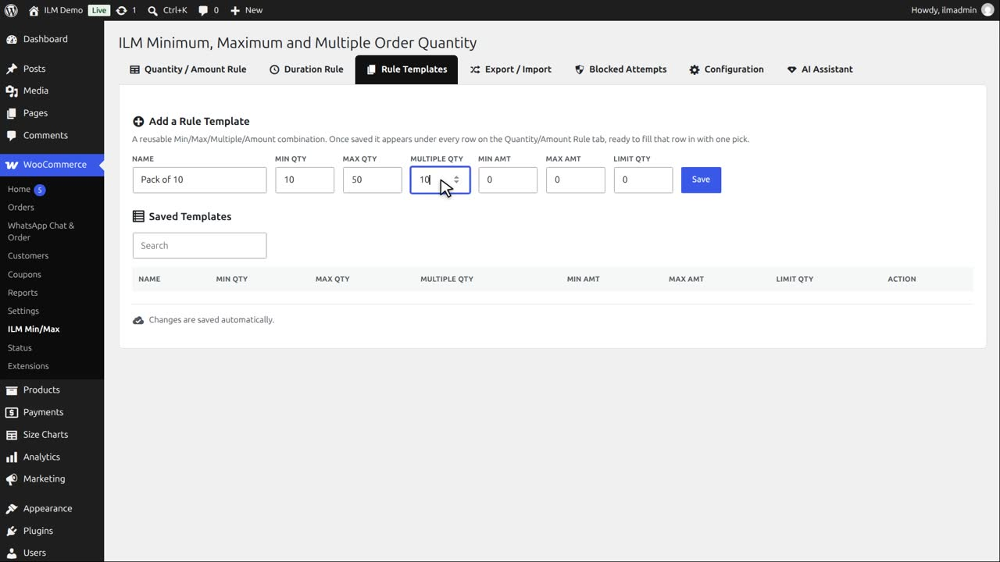
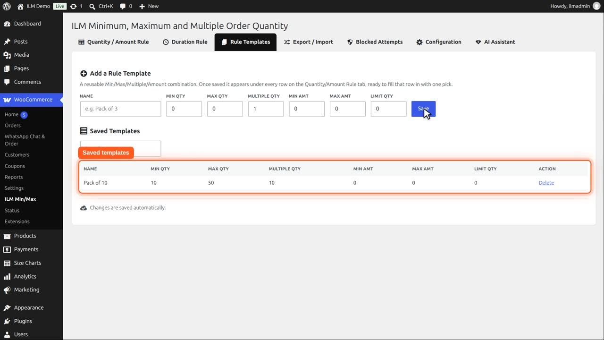
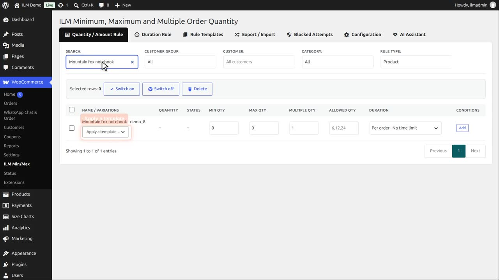
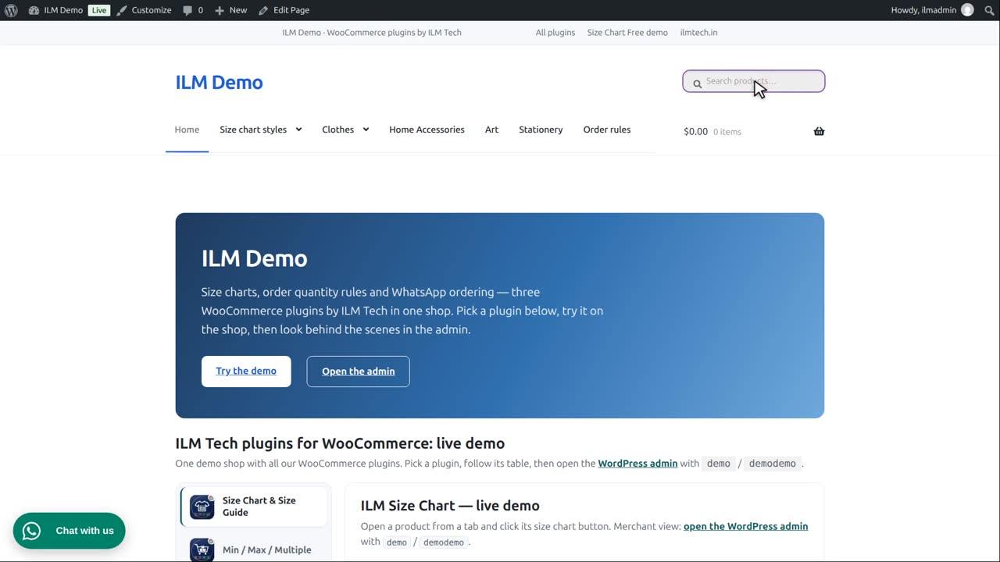

Pro add-on. This feature needs the Pro add-on. See Free and Pro.
A reusable Min/Max/Multiple/Amount combination, saved once. After saving, it appears as an "Apply a template…" picker under every row on the Quantity/Amount Rule tab, ready to fill that row in with one click.
Open the Rule Templates tab. A template is a set of Min, Max, Multiple and Amount values with a name.

For example: Pack of ten. Minimum ten, maximum fifty, in multiples of ten.

Click Save. The template appears in the list. You can delete it here at any time.

On the Quantity and Amount Rule tab, every row now has a template picker.

Pick Pack of ten for the Mountain fox notebook, and the row is filled in with the template values and saved.

On the product page, the notebook now starts at ten, and is sold in tens, up to fifty.